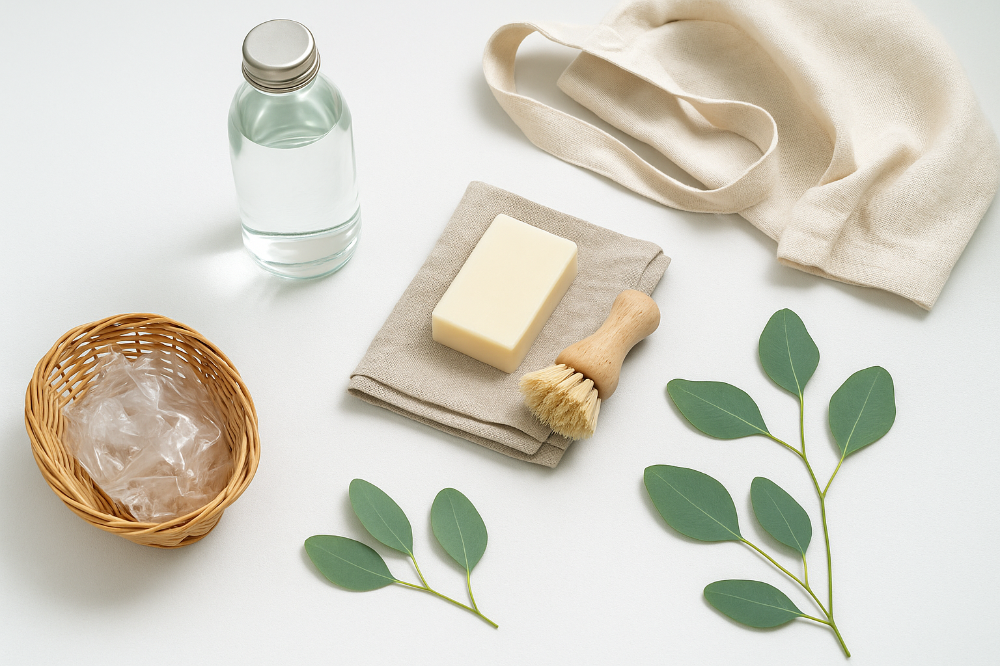
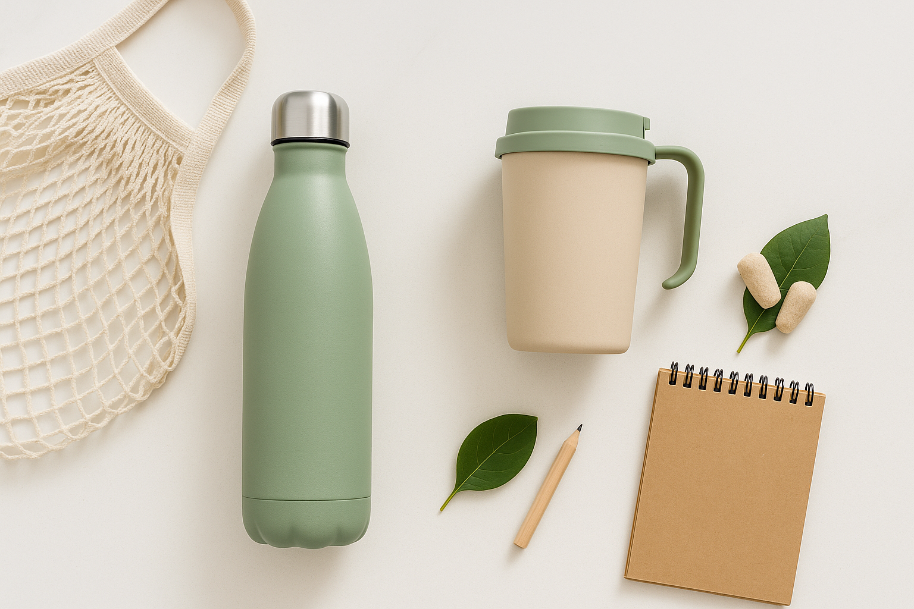

Un estilo de vida ecológico significa adoptar hábitos diarios que reducen nuestro impacto negativo en el planeta. No se trata de vivir en una cabaña aislada, sino de hacer pequeños cambios con sentido común (ser eco-lógico, como dice el juego de palabras). Estos cambios abarcan muchos aspectos de nuestra vida: cómo consumimos, qué comemos, cómo nos movemos y cómo manejamos nuestros residuos. Cada acción cuenta y suma ese granito de arena para un mundo más sostenible.
Acciones que suman
Consciencia diaria
prestar atención al consumo de agua, energía y plásticos.
Participación
involucrarse en causas ambientales y educar a otros.
pasos para una vida
- Item 1
- Item 2
- Item 3
- Item 4
- Item 5
recursos esenciales
- Item 1
- Item 2
- Item 3
- Item 4
- Item 5
| Producto convencional | Alternativa ecológica | Beneficios | Ahorro anual estimado |
|---|---|---|---|
| Limpiador multiusos | Vinagre diluido con agua | No tóxico, biodegradable, antibacteriano | ~€30 y 12 envases de plástico |
| Suavizante de ropa | Vinagre blanco con gotas de aceite esencial | Hipoalergénico, no deja residuos | ~€40 y 8 envases de plástico |
| Ambientadores artificiales | Plantas aromáticas y aceites esenciales | Purificación natural del aire, sin químicos | ~€50 y menos contaminantes en el hogar |
| Toallas de papel | Paños de algodón lavables | Reutilizables, menos residuos | ~€70 y 20kg menos de residuos |
| Detergentes convencionales | Nueces de lavado o detergentes ecológicos | Biodegradables, menos alergénicos | ~€20 y menor contaminación acuática |